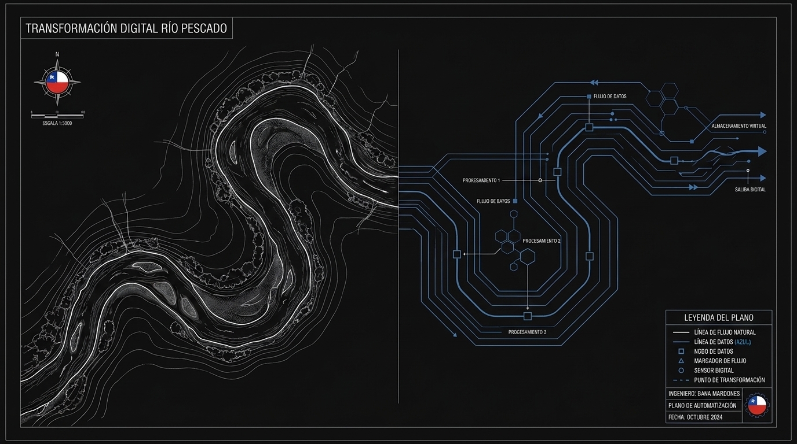
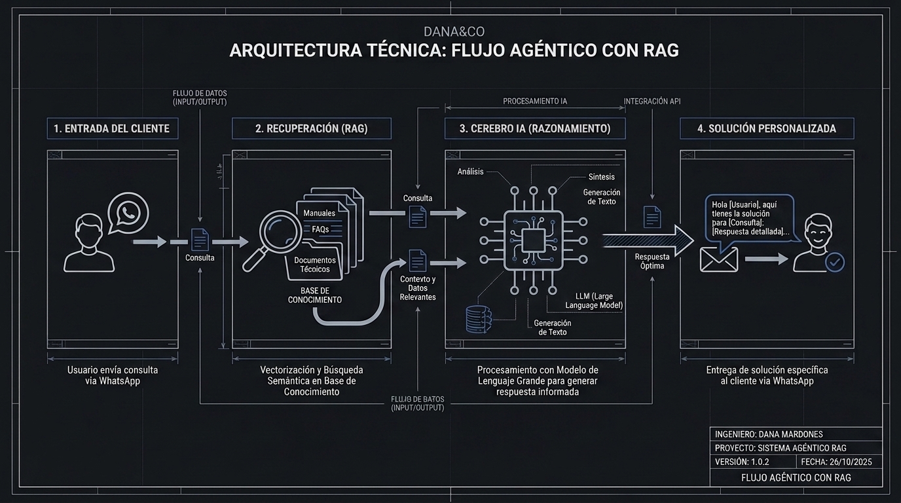

01
AI Studio
Nuestra línea Agentica/AI. Tenemos agentes de IA por industria y segun roles, con capacidades de entrenamiento según tus necesidades y que interactuan a través de Whatsapp, Interfaz interna: Sencillo y efectivo
Explorar →Consultora boutique en Tecnología e Innovación desde la Patagonia
Desarrollamos soluciones y asesoría tecnológica de alto impacto y bajo costo, respaldados por más de 15 años de experiencia en consultoras internacionales e industrias complejas. Desde la Patagonia chilena, combinamos calidad y experiencia con la cercanía de una consultora boutique.


15 años de experiencia en consultoras y en industrias complejas, llevando problemas tecnologicos a la realidad, a PROD.
Ingeniera UC. Msc Complex Project Management en The University of Manchester. Acreditación PMP, Prince2, Lean Expert, Full stack. Mi experiencia no es solamente en tecnología, sino en metodologías de eficiencia operacional como Lean, Six sigma, y diferentes approaches que son fundamentales a la hora de tomar decisiones tecnologicas in
Somos buenos en esto, y queremos ayudarte a aprovechar tu potencial.
El desafío tecnológico tiene varias caras. Descubre cual de estas líneas se acomoda mas a tus necesidades:
Nuestra línea Agentica/AI. Tenemos agentes de IA por industria y segun roles, con capacidades de entrenamiento según tus necesidades y que interactuan a través de Whatsapp, Interfaz interna: Sencillo y efectivo
Explorar →¿Necesitas un Gerente TI o aseso´ria TI pero no puedes pagarlo? Paga según uso y necesidades. Pero tendrás al alcance de tu bolsillo la posibilidad de tener un Gerente TI a tu disposición.
Explorar →Software factory end-to-end e integración IoT/Sensorización. Partimos de la idea, pasamos por factibilidades técnicas, prototipamos a la medida de tu bolsillo (y tu stack) y te entregamos "llave en mano". Hemos llevado tecnología a PROD por + 15 años y con la IA nuestra software factory es mas rápuda y economica.
Explorar →Como expertos, tambien podemos auditarte: Evaluacion cuali-cuantitativa del portafolio tecnologico, portafolio de brechas TI y roadmap de IA para empresas que quieren la transformación digital.
Explorar →Revisa nuestros casos de éxito, son nuestros clientes quienes hablan por nosotros;
Proyectos reales en industrias donde el error cuesta caro.

Módulo de gestión de combustible para las Fuerzas Armadas dentro de Muevo Empresas, integrado al core SAP.

Plataforma de telemática y seguridad vehicular: IoT, cloud AWS, app móvil e integración con Carabineros.

Evaluación de madurez organizacional sobre 105 facilitadores OPM3 en divisiones de la minera más grande del mundo.
Implementamos asistentes inteligentes y automatizaciones que atienden a tus clientes 24/7 y derivan a tu equipo solo cuando es necesario.
Conversa en tiempo real con un agente especializado por industria.
Industrias
Capacidades del agente
Adaptar agentes en tu empresa es la gran innovacion que nos trae la IA. Estos agentes, entrenados de manera correcta pueden brindarte a eficientar procesos en tu empresa de manera rapida, economica y con mucho valor. Haz clic en cada sector para ver el foco de automatización.
Agenda, recordatorios y calificación de pacientes por Isapre.

Elige el nivel según tu volumen y complejidad.
Consultas repetidas sin responder a mano.
Convertir chats en ventas, no solo respuestas.
Operaciones con varias áreas y flujos complejos.
¿Un proceso que le quita horas a tu equipo? Lo llevamos a producción en dos semanas hábiles.
¿No sabes qué automatizar primero? Empieza por la AI Operations Audit →
Pon a disposición de tu empresa una CTO con +15 años de experiencia: definición de arquitectura, supervisión de producto y decisiones estratégicas de IA y automatización — sin el costo ni la espera de contratar un ejecutivo interno.
El CTO fraccional dejó de ser un experimento. Con la presión de adoptar IA y un mercado de talento senior escaso y caro, contratar liderazgo técnico por horas — alguien que ya tomó estas decisiones en proyectos reales — es la forma en que las empresas medianas acceden a criterio de primer nivel sin pagar un sueldo ejecutivo completo.
Decisiones de arquitectura correctas antes de escalar — para no rehacer todo en 18 meses.
Sumar IA a minería, energía o construcción sin romper lo que ya funciona.
Un roadmap senior para ordenar el caos y recuperar velocidad de desarrollo.
La voz técnica que traduce "¿cuál es nuestra estrategia de IA?" en un plan ejecutable.
Software factory end-to-end con IA integrada al ciclo, e integración de hardware e IoT. Lo que antes tomaba meses, hoy toma semanas — sin sacrificar calidad ni control.
Una sola contraparte del problema a producción, con IA acelerando cada etapa.
Plataformas que combinan dispositivos físicos, conectividad, cloud y apps — como el Sensor Inteligente DERCO.
Conectamos lo nuevo con lo que ya tienes: SAP, sistemas transaccionales y APIs críticas.
¿Quieres ver esto en acción? Revisa los casos App COPEC y Sensor DERCO.
Antes de automatizar a ciegas, un diagnóstico senior de dónde estás parado y qué te conviene mover primero. Bajo compromiso, máximo criterio.
Un informe ejecutivo accionable, sin humo, y un camino directo hacia el siguiente paso.
Dónde tu stack te frena o te expone a riesgo.
Qué automatizar, en qué orden y con qué retorno estimado.
Madurez, cuellos de botella y cómo recuperar velocidad de entrega.
Quick wins desde el día uno + iniciativas priorizadas por impacto.
Proyectos reales en industrias donde el error cuesta caro — defensa, automotriz, minería.
Módulo de gestión de combustible para las Fuerzas Armadas dentro de Muevo Empresas, con prepago y post-pago integrados al core SAP.
Telemática y seguridad vehicular con marca propia: IoT, cloud AWS, app móvil e integración con Carabineros.
Evaluación de madurez sobre 105 facilitadores OPM3 en divisiones de la minera de cobre más grande del mundo.
Plataforma de gestión de combustible para el segmento FF.AA. · Copec Industrial
Muevo Empresas es la plataforma transaccional de Copec para clientes con flotas industriales de alto volumen — una de las más grandes de Latinoamérica. Dentro de ese ecosistema, las Fuerzas Armadas representan uno de los clientes más complejos: flotas de aviones, buques y maquinaria pesada de múltiples ramas, cada una con sus propios contratos, cupos y requerimientos de trazabilidad institucional.
El abastecimiento de las FF.AA. vivía en un modelo manual: órdenes de compra en papel, gestión telefónica de cupos y conciliaciones en planillas, sin visibilidad en tiempo real. Digitalizarlo implicaba respetar una estructura institucional rígida, múltiples niveles de autorización y dos modelos de pago radicalmente distintos.
Participé como directora de proyecto y referente técnico E2E, desde el levantamiento de requerimientos hasta la puesta en producción: workshops con operadores logísticos y equipos financieros de cada rama, mapeo del flujo AS-IS y diseño del TO-BE.
Sobre el core SAP ECC (MM, SD, FI, CO/PS) conectado a Muevo Empresas vía capa REST/SOAP sobre SAP PI/PO, con BAPIs e IDocs. Frontend en Angular 15+ con OAuth 2.0/JWT; datos en SAP HANA, PostgreSQL y Redis; entrega con Jenkins, Docker y Kubernetes sobre AWS EKS; gestión con Jira/Confluence en Scrum.
Plataforma de telemática, IoT y seguridad vehicular · DercoCenter Chile
Derco —hoy parte de Inchcape Américas— es el principal distribuidor automotriz de Chile. En un mercado con alto robo de vehículos y siniestralidad, la empresa dio un paso que pocos distribuidores han dado en Latinoamérica: desarrollar un servicio de telemática con marca propia, modelo de suscripción y ecosistema digital completo.
Participé como Project Manager E2E: levantamiento de requerimientos, coordinación de proveedores tecnológicos, seguimiento de implementación y gestión de la puesta en marcha — coordinando equipos internos con proveedores de hardware, conectividad y asistencia en ruta.
Dispositivo con GPS, módulo GSM/4G, acelerómetro y relay de cortaencendido. Backend sobre AWS (us-east-1) con S3 y API REST como capa de integración; central de monitoreo 24/7 conectada a OS-9. Apps nativas iOS y Android + panel web. Gestión con Jira/Confluence en Scrum.
Hardware en el auto. Cloud en AWS. App en el bolsillo. Carabineros en el loop.
Madurez en gestión organizacional de proyectos · Vicepresidencia de Proyectos, Codelco
Codelco es la mayor productora de cobre del mundo, con un portafolio de inversiones sobre US$10.000 millones y múltiples divisiones, cada una con su propia gobernanza. La Vicepresidencia de Proyectos encargó una evaluación integral de madurez aplicando el estándar OPM3 Third Edition del PMI.
El problema no era la ausencia de marcos, sino la falta de evidencia objetiva sobre cuánto esas capacidades estaban realmente estandarizadas, medidas y controladas en cada división. Sin línea base común, era imposible comparar madurez o priorizar inversiones de mejora.
Participé como líder técnico y metodológico, con responsabilidad end-to-end: diseño del instrumento, planificación de workshops, informes de brechas divisionales y el roadmap de mejora corporativo. Adaptamos los 105 Facilitadores Organizacionales del OPM3 al lenguaje y sistemas de Codelco sin perder fidelidad al estándar.
Instrumento de doble capa (ejecutiva y técnica) sobre 7 dimensiones, evaluando cada FO en los 4 niveles SMCI — Estandarizar, Medir, Controlar, Mejorar. Las brechas se clasificaron en críticas y significativas, consolidadas en matrices de análisis cruzado por división, con enfoque de consultoría Big Four y entregables diferenciados por audiencia.
Por primera vez Codelco tuvo una línea base objetiva y comparable entre divisiones — y un roadmap con quick wins desde el día uno.
"Soy Dana Mardones, fundadora de Dana&Co y si bien mi respaldo es mi experiencia de más de 15 años liderando tecnología y ahora IA en industrias de alta complejidad, no trabajo sola. Dependiendo de mi cliente y necesidad activo un staff de expertos que he conocido a lo largo de mi carrera."
DANA&CO es una consultora boutique de tecnología, liderada por Dana Mardones, pero con un fuerte staffing de expertos en minería, tecnología, data, acuicultura, energía, fintech y un panel de expertos que de acuerdo a las necesidades del cliente, vamos activando de manera eficiente y de acuerdo al criterio del cliente.
Nuestro criterio nace de +15 años y decenas de proyectos en minería, energía, automotriz, acuicultura y servicios financieros. Nuestra consultora boutique busca dar soluciones de manera eficiente, creemos que la gran consultoría es poco eficiente y cara: Nosotros queremos compartir nuestro conocimiento y dar soluciones reales - con la franqueza de decir qué conviene implementar primero y qué no.
Diseño e implementación del módulo de gestión de combustible para el segmento FF.AA., con integración profunda al core SAP.
Plataforma de telemática, IoT y seguridad vehicular con cloud AWS, apps nativas e integración con Carabineros.
Evaluación de madurez organizacional sobre 105 facilitadores OPM3 en divisiones de la mayor minera de cobre del mundo.
Plataformas de credit decisioning con IA para banca US. LLM, RAG, PMO y equipos distribuidos.
Programa digital a escala masiva integrado a SAP ECC y AWS.
Metodología, proyectos complejos y gestión de portafolios.
Medición de madurez organizacional en divisiones mineras — instrumentos digitales y roadmap corporativo.
Diseño e implementación de la primera PMO formal del ministerio y gobernanza de portafolio nacional.
Agenda un diagnóstico sin costo. Te digo con franqueza por dónde partir y qué te conviene de verdad (Somos Lean Lovers).
📞 +56 9 4141 1832 · ✉️ hola@dana-co.cl · 📍 Patagonia, Chile